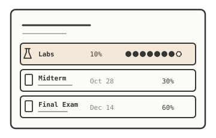
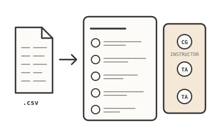
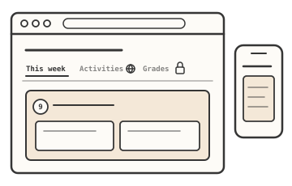
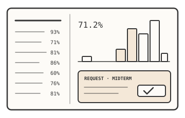

Every term, I found myself running each course out of five different places: a course website, a spreadsheet of marks, a folder of LaTeX exams, an inbox full of "I missed the midterm" emails, and a syllabus that was supposed to agree with all of them. Moving a single due date meant updating it in four places, and students always noticed the one I missed. I wanted one place where all of it lived together and stayed in agreement. That's why I created Lectern.
What Is Lectern?
Lectern is an open-source web app, built with Python and Flask, for running a course. For each course offering (say, CSC258 in Fall 2026), it keeps the course page, the gradebook and the exams together, so you set something once and it's right everywhere. It brings:
A Course Page That Builds Itself
Add your weeks, activities and announcements, and Lectern publishes a clean course website that opens on This week.
A Gradebook That Knows Your Syllabus
Weights, "best 7 of 8", makeups and passing rules are built in, and the marking scheme shows up on your course page automatically.
Exams Written Where They're Graded
Write tests and assignments right inside an evaluation, with versions and answer keys. Their marks feed straight into the gradebook.
Accommodations and Teaching Teams
Students request accommodations from the course page, and you approve them in one click. TAs can enter marks without touching your setup.
With Lectern, your course website, marks and exams can't drift apart. Change a due date or a weight once and every page that shows it is already up to date, from the first lecture to the final mark.

One course offering in Lectern: everything for the term, in one place
How It Works
Setting up a course takes an afternoon. After that, it mostly runs itself.

Set up your course
Add a course offering, then lay out its weeks and its evaluations, including weights, due dates, "best N of M", makeups and what happens when something is missed.
Each evaluation lands in the week it's due, and the marking scheme writes itself.

Bring in your class and your team
Import your class list straight from a Quercus or ACORN export. Then invite your co-instructors and TAs by email.
Instructors can do everything you can. TAs can see the gradebook and enter marks, but can't change the course setup.

Share your course page
Your course page has tabs for This week, Announcements, Activities, Evaluations and About. You choose which are public and which need a sign-in. Students sign in with their email and a one-time code, so there's no password to forget.
Send students the link, or embed the page in Quercus. It works just as well on a phone.

Teach, mark and keep up
Enter or upload marks and watch every student's course grade, the class average and the distribution update as you go. Accommodation requests arrive in one list, and approving or rejecting one emails the student for you.
Every save keeps the earlier version, so a mistake is never permanent.

The gradebook, with the whole class at a glance
Getting Started
There are two ways to start using Lectern:
Teaching at U of T? Use mine
Lectern is running at lectern.changapp.net. It's invite-only, so send me an email and I'll set you up with an account for your course.
Run Your Own Server
Lectern only needs Python 3 and an HTTPS address. Clone the GitHub repository and run the setup script. It asks a few questions and has you inviting instructors in minutes.
git clone https://github.com/chandra-gummaluru/lectern.git ~/apps/lectern
~/apps/lectern/new-lectern.sh
Try Lectern
Ready to run your whole course from one place?
Lectern is open source and free to use. Run it for your department, or ask me for an account on mine.
Got a feature in mind? I'd love to hear it. Reach out anytime!